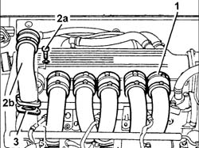

1072B42 INTAKE MANIFOLDS (all) - R.R. and Replace gasket
- Path
- Procedures > 10 ENGINE > 1072 inlet and exhaust manifolds > 1072B inlet manifolds > 1072B42 INTAKE MANIFOLDS (all) - R.R. and Replace gasket
- Kind
- repair procedure (removal / refitting; the operation number is the code)
- Applies to
- engines: 3.0 V6, 3.2 V6; all production periods
- Interactive page
- https://sloeber94.github.io/elrnDB-lThss/en/#/187410
Applies to: engines: 3.0 V6, 3.2 V6; all production periods
 Removing
Removing
 Refitting
Refitting1. Loosen the bands securing the intake manifolds to the air chamber.
2. Undo the bolts (2a) and rmeove the intake manifolds (2b).
3. Remove the seals.

Applies to: engines: 3.0 V6, 3.2 V6; all production periods
Refitting
Removing- Fit the intake manifolds complete with new seals and secure them using the bolts.
- Tighten the bands securing the intake manifolds to the air chamber.